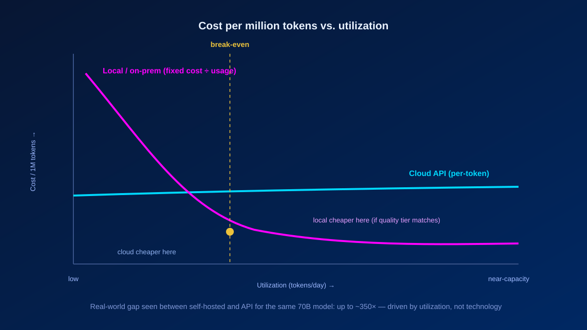

Every company integrating AI eventually hits the same fork in the road: pay per token via cloud APIs, or invest in hardware and run models locally. The pitch for each side sounds deceptively simple — cloud means zero upfront cost but variable spend that scales with usage; on-prem means high CAPEX but "free" tokens forever. Security tells a similar binary story: cloud is convenient but data leaves your network; local is sovereign but you are on your own.
Both narratives are oversimplified. Here is what the numbers and the research actually say — including where each argument breaks down.
In short
Neither option is universally cheaper. On-prem wins at sustained high utilization with a model class that meets your quality bar — and only when personnel, energy, and infrastructure are fully counted. Cloud wins at low-to-moderate volume, for burst workloads, and whenever you need frontier capability. On security, local deployment doesn't remove risk, it shifts it: you trade third-party data access for supply-chain, operational, and personnel risk. The right call comes from data classification and measured usage, not ideology.
Part 1 — Total cost of ownership: the math you're not doing
The token-price illusion
At frontier API prices (Claude around $3 per million input tokens and $15 per million output; GPT-4o around $2.50 / $10), one RTX 4090 at its ~$1,599 MSRP buys you roughly 0.3 to 0.5 billion tokens. That's it. But at budget-model API prices — DeepSeek V4 Flash from ~$0.14 per million, Llama 3.3 70B from ~$0.12 per million via low-cost providers — the same $1,599 covers 6 to over 13 billion tokens.
The much-repeated claim that "for the cost of one GPU you can burn 5 billion tokens" sits squarely in the budget-model bracket — and those are exactly the model classes that can realistically run on a single consumer GPU. Both sides of the debate cherry-pick their price point. The honest answer: the comparison only makes sense when you align model quality tiers.

The utilization trap
An RTX 4090 running a quantized 70B model produces between 8 and 30 tokens per second in real-world conditions — about 2.5 million tokens per day at full throttle. At frontier blended pricing (~$4–6 per million for a typical 3:1 input-output mix), that's $10–15 per day in equivalent API value — enough to amortize the hardware over roughly one year of continuous use.
But if your use case needs only 50,000 tokens per day, locally hosted becomes dramatically more expensive. Real-world comparisons show self-hosted Llama 3.3 70B at low utilization costing up to $43 per million tokens, while the same model served via a well-priced API provider runs at $0.12 per million. That's a 350x difference — driven entirely by utilization, not technology.
The spreadsheet blind spots
A functional 70B inference box costs far more than the GPU. You need 128 GB of RAM, a capable CPU, and fast NVMe storage — easily €4,000–6,000 for the complete system. Then energy: an RTX 4090 pulls up to 450W under load; a full server draws more. At German business electricity rates (~€0.27/kWh), the GPU alone costs €1,000–1,500 per year — add 30–40% for cooling. Over a 3-year hardware lifecycle, energy costs alone can exceed the GPU purchase price.
Then there's the biggest line item nearly every on-prem ROI pitch ignores: personnel. Running a local AI stack isn't plug-and-play. Someone handles model selection, quantization, updates, monitoring, security patches, and failure response. In the DACH region that competence costs six figures annually — and it dominates any hardware spreadsheet.
The quality ceiling
Frontier models with hundreds of billions of parameters do not run on a single RTX 4090. Locally, you are typically deploying 8B to 70B parameter models, often quantized. These are solid for many business tasks — text classification, summarization, RAG over internal documents — but they don't match the strongest cloud models on complex reasoning, multimodal tasks, or multi-step agentic workflows. If you need frontier quality, you need either multiple high-end GPUs or the cloud. Either way, the "local is always cheaper" math falls apart.
On-prem wins at sustained high utilization with a model class that meets your quality requirements — and only when personnel, energy, and infrastructure are fully accounted for. Cloud wins at low-to-moderate volume, for burst workloads, and whenever you need frontier capability. Anyone telling you one side is universally cheaper is either selling hardware or hasn't done the spreadsheet.
Part 2 — Four uncomfortable truths about local models
The security argument for local deployment usually goes: "your data never leaves your network, so it's inherently safer." That's directionally true for the data-transfer risk. But local models introduce their own attack surface the on-prem narrative tends to omit.
1. Open-weight is not open source
The Open Source Initiative has been unambiguous: Meta's Llama 3.x does not meet the Open Source Definition. It carries commercial-usage thresholds (over 700 million monthly active users triggers a separate license) and distribution restrictions. Similar patterns apply to Google's Gemma and others. Notably, some Chinese models are licensed more permissively — DeepSeek R1 is MIT-licensed, Qwen models ship under Apache 2.0-style terms. Regardless of license: you cannot practically audit billions of model weights. The transparency that "open source" implies simply doesn't exist at this scale.
2. Export controls on models are a real, evolving risk
The U.S. government's "AI Diffusion Rule," issued in January 2025, attempted to regulate the distribution of open-weight AI models for the first time. It was rescinded in May 2025 before taking effect — but a replacement framework has been announced, and chip export controls remain fully in place. The precedent is set: which models a company can legally download and deploy can change with geopolitics. If your strategy depends on freely available open-weight models from abroad, that dependency carries a political risk premium.
3. Backdoors and supply-chain risk are documented, not theoretical
Anthropic's "Sleeper Agents" research (Hubinger et al., 2024) showed that training-time backdoors in large language models survive standard safety fine-tuning — including adversarial training. In their experiments, backdoor behavior activated roughly 99% of the time even after mitigation attempts. This is foundational research, not a report of a production attack. But the implication is clear: if you pull model weights from third parties — model hubs, community fine-tunes — you inherit a supply-chain risk you cannot fully verify. The very risk local deployment seeks to avoid (external dependency) resurfaces through the model supply chain itself.
4. Air-gapped is a myth for most real workloads
A model without current information is useless for nearly every business application. You will need retrieval-augmented generation (RAG), agent frameworks, tool integrations, and database connections — collectively, a harness that links the system to the outside world. That means the system is not, and cannot be, fully isolated. The research on indirect prompt injection (Greshake et al., 2023 — now the #1 risk in the OWASP Top 10 for LLM applications) shows attackers can control LLM applications through content the model processes: documents, websites, emails, database records. Running locally shifts responsibility for that perimeter to you; it doesn't make the attack go away.
What about GDPR?
The GDPR concern is real. DeepSeek was banned in Italy (January 2025) and scrutinized in Ireland specifically over data-handling practices. But the compliance picture is broader than "cloud APIs violate GDPR." The EU-U.S. Data Privacy Framework, with its adequacy decision from July 2023, survived its first court challenge in September 2025. Major cloud providers offer EU Data Boundary configurations that include AI processing residency. Standard Contractual Clauses remain available. European providers (OVH, Ionos, Schwarz Group / StackIT) offer alternatives entirely outside U.S. jurisdiction.
The honest security assessment: local deployment shifts risks rather than eliminating them. You trade third-party data access risk for supply-chain, operational, and personnel risk. Cloud trades direct control for provider certifications, SLAs, and shared responsibility. The right approach is data classification — knowing which data goes where based on actual risk, not ideology.
Part 3 — How to actually decide
A decision matrix beats a rule of thumb:
| Decision factor | Cloud API wins when… | Local / on-prem wins when… |
|---|---|---|
| Usage pattern | Occasional, prototypes, burst workloads | Sustained near-capacity, batch processing |
| Data sensitivity | Public or low-risk internal data | Regulated data: healthcare, legal, finance, government |
| Quality requirement | Frontier models needed (400B+, multimodal) | 8–70B models sufficient for your tasks |
| In-house skills | No dedicated MLOps team | Existing AI / infrastructure engineering team |
| Latency / connectivity | Tolerant of network latency | Real-time or offline operation required |
| Compliance posture | DPF / SCCs / EU processing adequate | Maximum data sovereignty mandated |
| Budget structure | Variable OPEX preferred | CAPEX acceptable, long-term volume pricing desired |
The pragmatic default: hybrid
In practice, most organizations land on a hybrid architecture:
- Sensitive, high-volume workloads → local or EU sovereign cloud
- High-volume, non-sensitive tasks → low-cost API providers (e.g. Llama 3.3 70B at ~$0.12 / 1M via a budget host)
- Complex, low-volume queries → frontier models (Claude, GPT-4o) on demand
- Routing layer → directs each request by sensitivity and complexity
The process that matters more than the conclusion
- Measure your actual usage for 90 days — token volume, model class, query patterns.
- Classify your data — what's regulated, what's sensitive, what's public.
- Define your quality requirements — can a quantized 70B do the job, or do you need frontier reasoning?
- Calculate TCO with all components — hardware, energy, cooling, personnel, licenses, model updates, failure risk, compliance overhead.
- Decide based on the numbers — not on what hardware vendors, cloud providers, or LinkedIn posts tell you.
Conclusion
The choice between cloud APIs and local AI models is genuinely complex. Local inference promises sovereignty and potentially lower cost at scale, but it demands high utilization, significant operational investment, and acceptance of its own security risks. Cloud APIs offer instant access to frontier capability with zero hardware management, but they introduce variable cost at scale and a third party into your data pipeline.
Neither path is universally right. The companies that get this decision right stop asking "which is better?" and start asking "for this specific workload, with this data classification, at this volume — what do the numbers say?"
Glossary
- TCO (Total Cost of Ownership)
- The full cost of a solution over its life — here: hardware, energy, cooling, personnel, licensing, updates, failure risk, and compliance, not just the sticker price of a GPU or a per-token rate.
- Open-weight vs open-source
- Open-weight means the model parameters are downloadable; open-source (per the OSI definition) also means unrestricted use and transparency. Most "open" LLMs are open-weight but carry licensing and usage restrictions.
- Quantization
- Compressing a model's weights to lower precision so it fits and runs on smaller hardware, at some cost to quality.
- RAG (Retrieval-Augmented Generation)
- Feeding a model current, external documents at query time so it can answer with information it wasn't trained on — and the reason a "local" model is rarely truly isolated.
- Indirect prompt injection
- An attack where malicious instructions hidden in content the model reads (a document, webpage, email) hijack its behavior. The #1 risk in the OWASP Top 10 for LLM applications.
- EU-U.S. Data Privacy Framework (DPF)
- The adequacy mechanism (2023) that legitimizes personal-data transfers to certified U.S. providers; it survived its first court challenge in September 2025.
Frequently Asked Questions
Is running a local LLM actually cheaper than a cloud API?
Only at sustained high utilization, and only when the local model class meets your quality requirement. The cost of local hosting is a fixed sum divided by usage — brutal at low volume. The same 70B model can cost up to ~$43 per million tokens self-hosted at low utilization versus ~$0.12 per million via an API, a ~350x gap driven by utilization, not technology. And that's before personnel, energy, and cooling.
Does keeping AI local make it more secure?
It removes the third-party data-transfer risk but adds others: unverifiable model supply chain (training-time backdoors survive fine-tuning), export-control exposure on the models themselves, and full operational responsibility for the RAG/agent harness — which is where indirect prompt injection lives. Local shifts risk rather than eliminating it.
Do cloud AI APIs automatically violate GDPR?
No. The EU-U.S. Data Privacy Framework, EU Data Boundary configurations, Standard Contractual Clauses, and EU sovereign providers all offer compliant paths. GDPR compliance is a matter of configuration and data classification, not simply "cloud versus local."
What's the pragmatic default architecture?
Hybrid with a routing layer: sensitive or high-volume workloads to local or EU sovereign cloud, high-volume non-sensitive tasks to a low-cost API host, and complex low-volume queries to a frontier model on demand — each request routed by sensitivity and complexity.
References
- Hubinger et al. (2024). Sleeper Agents: Training Deceptive LLMs that Persist Through Safety Training.
- Greshake et al. (2023). Not what you've signed up for: Compromising Real-World LLM-Integrated Applications with Indirect Prompt Injection.
- OWASP Top 10 for LLM Applications.
- Open Source Initiative — on open-weight vs the Open Source Definition.